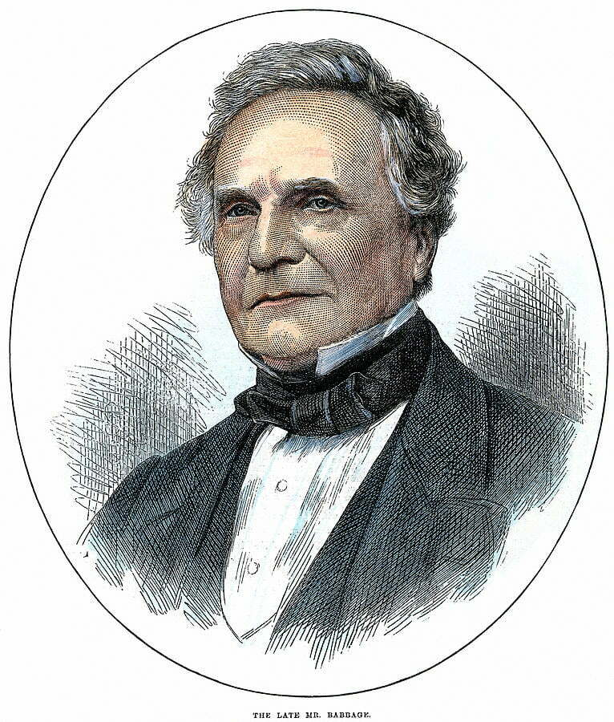
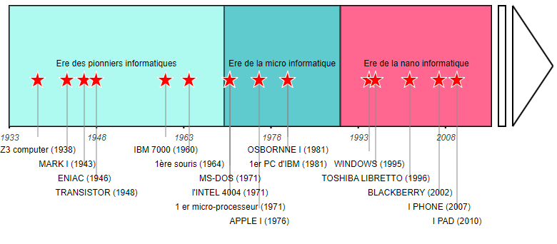

L'histoire de l'informatique est une saga qui a débuté dans les premières sociétés humaines avec des outils rudimentaires de calculs tels que l'abaque et le boulier. Au fur et à mesure des siècles, des machines à calculer plus avancées ont été inventées, aboutissant à la création de l'ancêtre de l'ordinateur moderne par Charles Babbage au XIXe siècle. Au tournant du XXe siècle, Alan Turing a posé les bases théoriques de l'informatique. Durant la Seconde Guerre mondiale, il a joué un rôle majeur dans le décryptage des codes secrets allemands en concevant la "Bombe". Dans les années 1940, les premiers ordinateurs ont fait leur apparition, marquant ainsi le début de l'ère numérique.

L'évolution des réseaux a débuté avec les réseaux de télégraphie au XIXe siècle et s'est poursuivie avec l'avènement de la téléphonie. Les années 1960 et 1970 ont vu l'émergence des premiers réseaux informatiques, tels que l'ARPANET, jetant les bases de l'Internet moderne. Les années 1980 ont été marquées par le développement des protocoles TCP/IP, permettant la communication entre des ordinateurs de différentes marques et systèmes d'exploitation. L'ouverture de l'Internet au grand public dans les années 1990, accompagnée par l'avènement du World Wide Web, a été une étape majeure. La dernière décennie a vu l'essor des réseaux sociaux et des technologies sans fil, comme le Wi-Fi et la 5G, offrant une connectivité toujours plus rapide et étendue.
L'évolution des ordinateurs est un récit fascinant qui remonte aux années 1940 avec les premiers ordinateurs tels que l'ENIAC, qui étaient énormes et consommaient beaucoup d'énergie. Au fil des décennies, les ordinateurs ont connu une miniaturisation et une augmentation de la puissance de traitement grâce à l'introduction de transistors dans les années 1950 et de microprocesseurs dans les années 1970. Les années 1980 ont vu l'émergence des ordinateurs personnels, tandis que les années 1990 ont vu l'avènement d'Internet et des ordinateurs portables. Depuis lors, les progrès dans la technologie des semi-conducteurs, la mémoire, le stockage et les interfaces utilisateur ont permis de produire des ordinateurs plus petits, plus puissants et plus polyvalents, de la taille d'une montre connectée aux superordinateurs capables de résoudre des problèmes complexes en quelques secondes.
